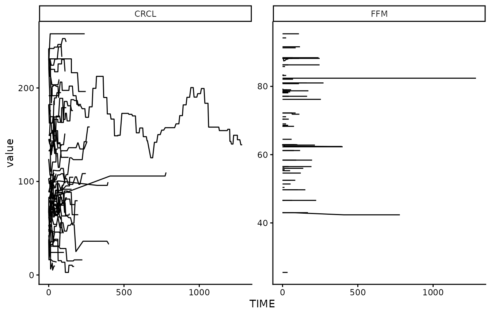
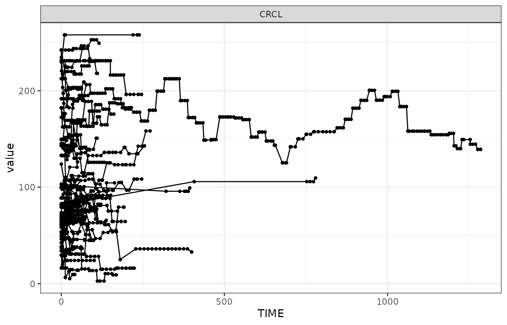
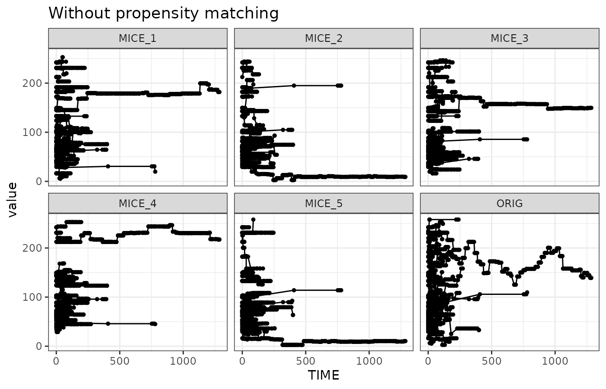
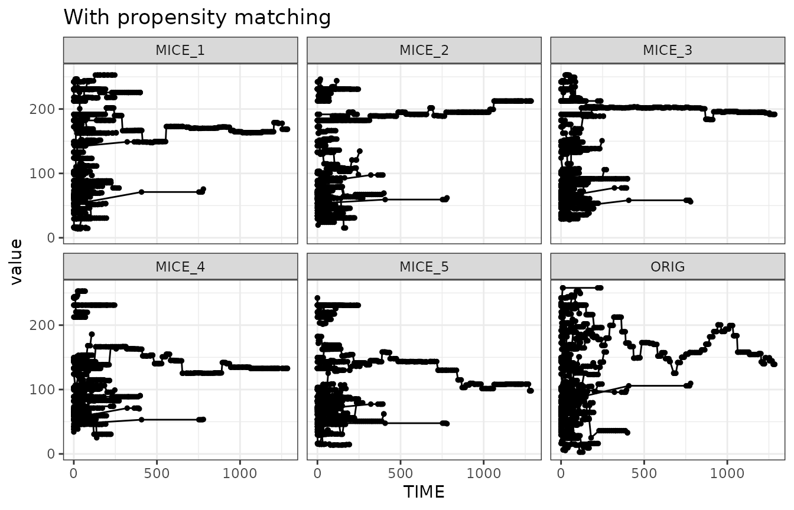
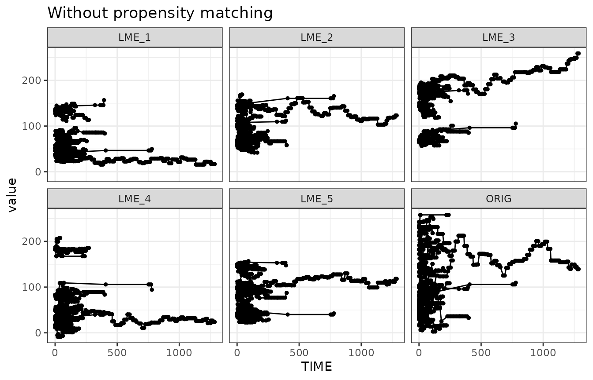
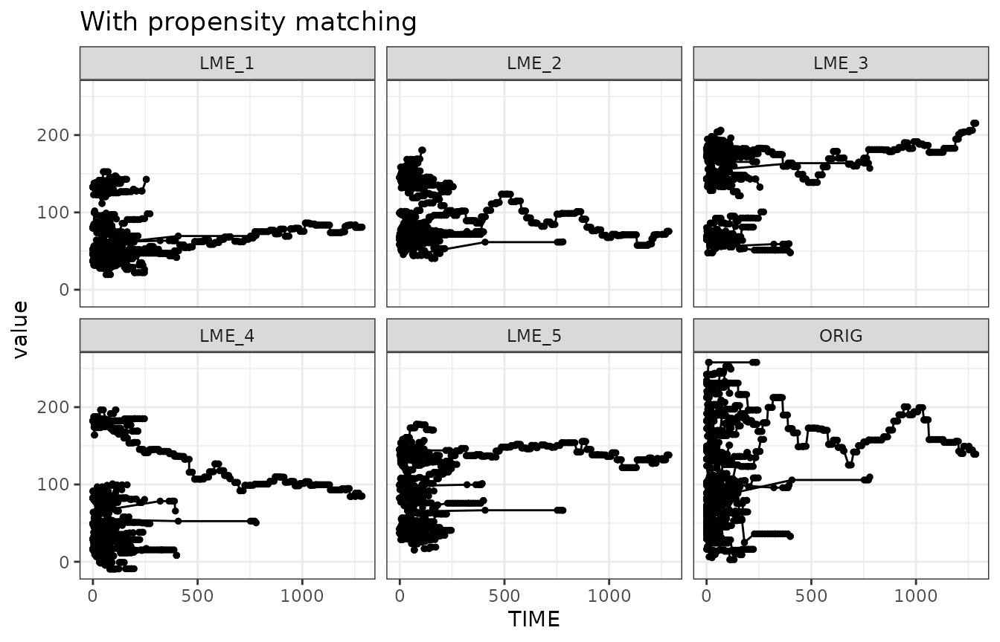
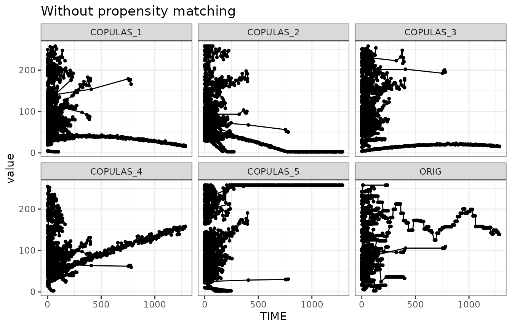
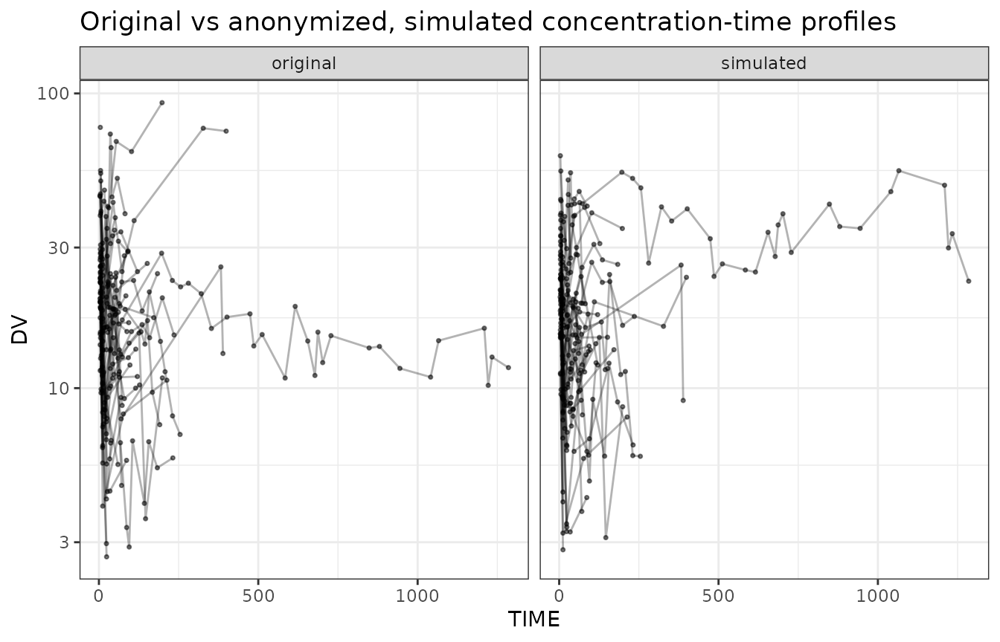
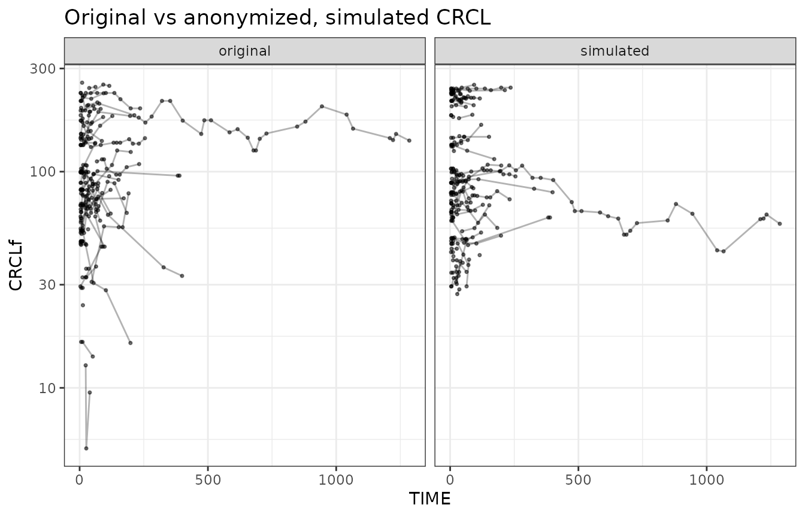

Anonymizing pharmacokinetic modeling datasets
anonymizing_datasets.RmdNote: The example data and the FeRx model used in this vignette are bundled with the package under
inst/extdataand accessed viasystem.file().
Introduction
Datasets can often not be shared, either because of privacy concerns, or because the rights to the data are not owned. If we would be able to anonymize the data sufficiently, however, we would be able to share them with others. This can be useful in various ways, e.g. allowing other researchers to reproduce models, allow testing and benchmarking for optimization of estimation algorithms or covariate selection approaches, or just to allow researchers to play around with certain types of datasets that are more realistic than purely simulated datasets with simplistic dosing/sampling designs.
Approach
Real world pharmacokinetic modeling datasets can have various identifying information:
- Subject ID numbers, study ID numbers, drug names, etc
- Dates of birth, or age.
- Date/time of sampling/dosing
- Covariate data (esp. when extreme)
- Concentration data
We can take the following initial steps to strip PHI pretty easily:
- Renumber ID from 1:n, so they have no relationship to any patient number
- Remove any unnecessary columns (those not needed for modeling/analysis, and not used in covariate testing)
- Simulate new drug concentration data (if we have a PK model)
We can keep the dosing and sampling scheme as-is, as these are not considered PHI unless they can be linked to a specific subject in other ways.
However, we would still need to have a set of covariates for each subject, ideally matching the structure and distributions in the original dataset. While it is fairly easy to generate samples of covariates that mimic the multi-variate distribution of static covariates (e.g. using multivariate normal distributions, MICE sampling, bootstrap sampling, or copulas), drawing realistic time-varying covariates is more challenging.
Sampling time-varying covariates
Our general covariate sampling methods don’t allow for sampling of time-varying covariates. Bootstrap can technically be used, but then the time-varying values are retained exactly, and thus violating the requirement to sample new values (if used in the context of anonymization).
We have however several options to sample covariates, while also retaining time-varying aspect:
- Sample using MICE, adapted to iteratively sample time-varying covariates. When covariate is time-varying, sample first the initial covariate sample using MICE. Then, iteratively, sample the next value based on the previous value and time. Keep going until all data points filled in.
- Build a simple linear mixed-effects model to describe covariate correlations, and correlation with time. Then simulate from this model.
- Copula sampling. For time-varying covariates we would first build simple linear mixed-effects models that describe their trajectories. In the copula sampling we then sample the model coefficients, rather than the actual samples, and use these to reconstruct trajectories.
All approaches are relatively easy to implement. The latter two approaches have the benefit of generating entirely new samples, although the drawback is that they could generate examples that are less plausible (especially if the original dataset is small).
MICE sampling
As an example, we’ll use a vancomycin dataset here, which has these covariates:
#> [1] "FFM" "CRCL"
Let’s focus on the CRCL covariate, which shows the most
variability over time:

We can show that with the timevarying-MICE sampling approach
(sample_covariates_mice_timevarying()) we can sample
covariate profiles that look similar to the one seen in the original
dataset. We show here 5 simulated example draws, and the original in the
bottom-right corner.

When we don’t use any propensity matching, however, we can see that some of the profiles may be unexpected. It could be that some profiles are less realistic due to the fact that they don’t match the dosing or sampling designs anymore. Therefore it would be good to apply propensity-score matching for the covariates for which it is relevant. This would lead to the following example draws:

Linear model-based covariate simulation
One drawback of the MICE-based sampling of covariates is that no purely new covariate values can be generated. In contrast to the bootstrap, it does let go of the constraint of sampling entire covariate sets per-subject, but still it can only sample covariate values it has seen in the dataset. So theoretically, especially with the propensity-score activated, it could be argued the “anonymization” is not sufficient using MICE, as it could actually be that the same “drawn” covariates are matched to the original subject, especially when using propensity-score matching.
An alternative is to build a simple LME model for the covariate distributions, that also takes time into account. When simulating based on such a model, only new covariate values are drawn, ensuring a fuller anonymization. Also in this approach, applying propensity-score matching is useful, to ensure optimal realism in the new dataset.


Copulas
Sampling covariates can also be done using copulas. Time-varyingness
can be achieved by fitting a simple time-based model to the data, and
then sampling the model coefficients using copulas rather than the
actual values (Zwep et al. CPT-PSP 2023). We’ll also add some noise (4%)
to the data, otherwise the trajectories are very static. This section
requires the rvinecopulib package.

The timevarying nature of the simulated data looks a bit less like the original data now, compared to either MICE or LME methods.
Overall, the data sampled with timevarying-MICE, with propensity-score matching, most resembles the original data.
Last step: concentration simulation
Now that we have an approach to perform the sampling of time-varying covariates while maintaining realism in the time-varying aspects, we can perform the last step in this process: the simulation of the concentration-time curves.
Again, to improve realism in the simulation, we could do another propensity-score matching step based on draws (etas) from the omega matrix. However, that would then destroy the matching we just did for the covariates. If the original dataset contained much treatment-adaptation, this may however warrant further consideration. One approach could be to also draw eta’s before the covariate-propensity-matching is done, and match on both the relevant covariates as well as the relevant ETAs. But for most cases this may be overkill, and we’ll leave that out of the generic functions for now.
Putting it all together: anonymize_dataset() function
The function anonymize_dataset() combines all steps
described above: the simple data cleaning, the sampling of
(time-varying) covariates, and the simulation of concentration data. A
single call can now generate a new dataset.
The vancomycin model (vanco_model.ferx) drives clearance
off CRCLf and the volumes off FFM, so those
are the covariates we sample and anonymize. The structural columns
(ID, EVID, AMT,
TIME, DV, RATE) already use their
default names in this dataset, so the default dictionary
applies.
One additional step aims to improve the realism of the simulated data further: we draw 10 candidate covariate sets and keep the one whose simulated concentration data most closely resembles the original, judged by a score that computes the deviance from the original data. This score can be based on the covariates, the simulated concentrations, or both.
Additionally, we round both the covariate data and the simulated concentration to 4 significant digits, and drop below-LOQ observations.
The simulation step requires the ferx package to
simulate concentrations.
model_file <- system.file("extdata", "vanco_model.ferx", package = "irxforge")
anon <- anonymize_dataset(
data = csv,
method = "lme",
covariates = c("FFM", "CRCLf"),
model_file = model_file,
dictionary = list(
ID = "ID", EVID = "EVID", AMT = "AMT",
TIME = "TIME", DV = "DV", RATE = "RATE"
),
n_candidates = 10, # draw 10 candidates, keep the closest to the original
score_on = "concentration", # score each candidate on its simulated concentrations
sigdig = 4, # round covariates and simulated concentrations
loq = 2.0, # vancomycin LOQ (mg/L)
blq_method = "remove", # drop below-LOQ observation rows
seed = 26
)
head(anon)
#> ID TIME EVID AMT RATE DV MDV FFM CRCLf
#> 1 1 0.0000 1 1750 1000 0.00 1 62.8 65.04
#> 2 1 6.6167 0 0 0 15.13 0 62.8 65.04
#> 3 1 10.1000 2 0 0 0.00 1 62.8 73.74
#> 4 1 10.2000 1 1750 1000 0.00 1 62.8 73.74
#> 5 1 20.3833 2 0 0 0.00 1 62.8 72.98
#> 6 1 23.8000 2 0 0 0.00 1 62.8 75.09
# How close the selected candidate was to the original (lower = closer)
attr(anon, "similarity_score")
#> [1] 0.007480446The result is a ready-to-share pharmacometric dataset: IDs renumbered
1:n, identifying columns dropped, covariates resampled (and
rounded), and concentrations re-simulated from the model.
bind_rows(
csv |> mutate(source = "original"),
anon |> mutate(source = "simulated")
) |>
filter(EVID == 0) |>
ggplot(aes(x = TIME, y = DV, group = ID)) +
geom_line(alpha = 0.3) +
geom_point(size = 0.6, alpha = 0.5) +
scale_y_log10() +
theme_bw() +
facet_wrap(~source) +
ggtitle("Original vs anonymized, simulated concentration-time profiles")
The covariate distribution of CRCLf in this run looked like this:
